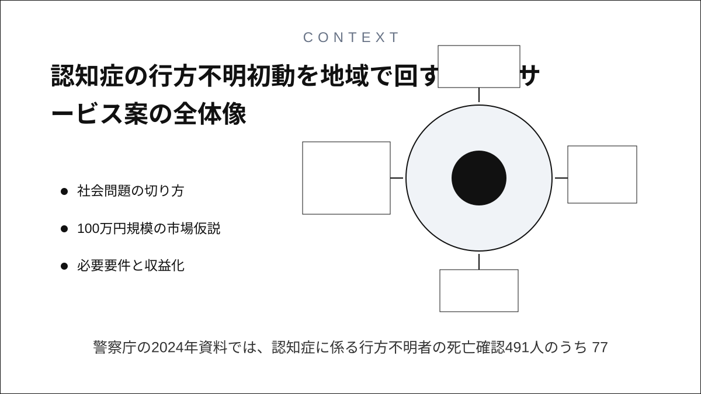
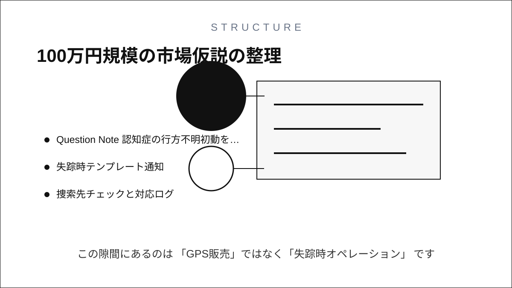
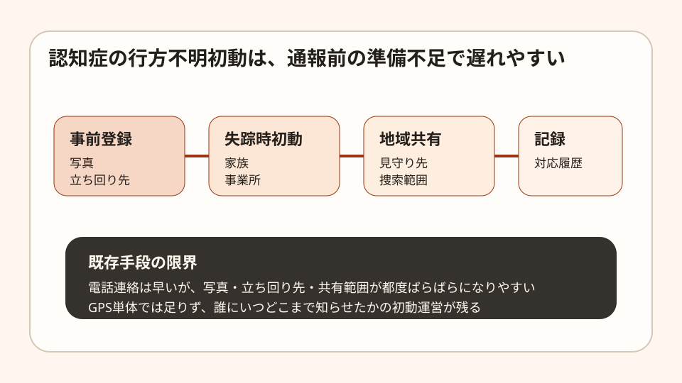
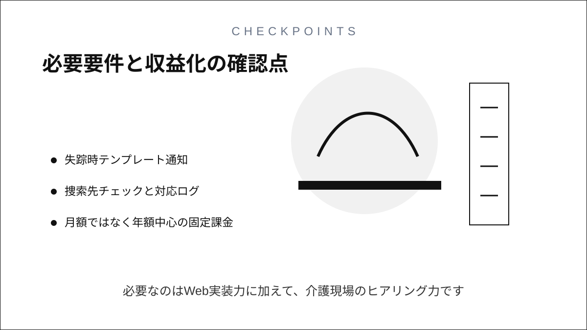

Question Note
認知症の行方不明初動を地域で回す小規模サービス案



警察庁の2024年資料では、認知症に係る行方不明者の死亡確認491人のうち 77.8%が行方不明地点から5km圏内で確認されています。発見可能性は遠距離捜索より、 初動の速さと捜索範囲の切り方に左右されます。
社会問題の切り方
家族だけで抱えると初動が遅れ、介護事業所だけでは地域共有が弱い。この隙間にあるのは 「GPS販売」ではなく「失踪時オペレーション」です。
| 課題 | 既存手段の限界 | 欲しい機能 |
|---|---|---|
| 写真や特徴の整理不足 | 毎回電話や紙で探す | 事前プロフィール登録 |
| 連絡先が散る | 家族、事業所、見守り先が別導線 | 初動一斉共有 |
| どこを探したか残らない | 後で振り返れない | 捜索ログと報告出力 |
100万円規模の市場仮説
全国展開ではなく、地域の介護事業所・家族会・見守り団体 120組織を到達可能市場と置きます。
| 項目 | 仮定 | 結果 |
|---|---|---|
| 到達可能組織数 | 120 | 生活圏で営業可能 |
| 初年度シェア | 10% | 12組織 |
| 年額利用料 | 60,000円 | 720,000円 |
| 初期設定支援 | 20,000円 x 8 | 160,000円 |
| 研修会 | 35,000円 x 4 | 140,000円 |
| 初年度売上 | 合計 | 1,020,000円 |
必要要件と収益化
- 家族・事業所向けの簡単な事前登録
- 失踪時テンプレート通知
- 捜索先チェックと対応ログ
- 月額ではなく年額中心の固定課金
コストは通知、DB、監査ログ、バックアップで年8万円前後に抑えやすく、実行者は 1名で足ります。必要なのはWeb実装力に加えて、介護現場のヒアリング力です。
